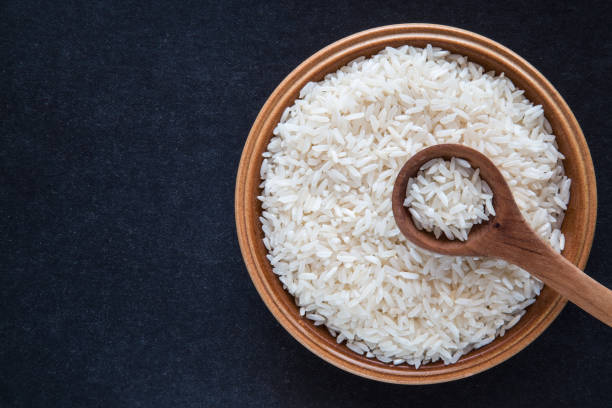

Growing Jute involves several steps, from land preparation to harvest. Here's a detailed step-by-step guide:
1] Choose a Suitable Location: Choose well-drained, loamy or clay loam soil with good water retention capacity.
2] Germination and Seedling Stage:
Use certified, disease-free seeds of a high-yielding jute variety.Treat the seeds with fungicides (like Thiram or Captan) to prevent soil-borne diseases.
3] Sow Seeds:
Optimal sowing time is from March to May, depending on the region and climate.
4] Weeding:
Thin the seedlings to maintain proper spacing (10-15 cm between plants) when they are about 10-15 cm tall.
5] Fertilization:
A common recommendation is to apply 60-80 kg of nitrogen, 40-60 kg of phosphorus, and 40-60 kg of potassium per hectare.
6] Harvesting:
Harvest the plants when they are at the right stage of maturity to ensure fiber quality.Cut the plants close to the ground using a sickle or a similar tool.Bundle the cut plants and leave them in the field for 2-3 days to shed excess leaves.
Jute cultivation involves careful land preparation, proper seed treatment, timely sowing, adequate irrigation, regular weeding, balanced fertilization, pest and disease management, and meticulous harvesting and retting to produce high-quality jute fibers.
हिंदी
जूट उगाने में भूमि की तैयारी से लेकर फसल काटने तक कई चरण शामिल होते हैं। यहां एक विस्तृत चरण-दर-चरण मार्गदर्शिका दी गई है:
1] उपयुक्त स्थान चुनें: अच्छी जलधारण क्षमता वाली अच्छी जल निकास वाली, दोमट या चिकनी दोमट मिट्टी चुनें।
2] <यू>अंकुरण और अंकुरण चरण:
अधिक उपज देने वाली जूट किस्म के प्रमाणित, रोग-मुक्त बीजों का उपयोग करें। मिट्टी से होने वाली बीमारियों को रोकने के लिए बीजों को फफूंदनाशकों (जैसे थीरम या कैप्टन) से उपचारित करें।
3] <यू>बीज बोएं:
क्षेत्र और जलवायु के आधार पर, बुआई का इष्टतम समय मार्च से मई तक है।
4] निराई:
जब पौधे लगभग 10-15 सेमी लंबे हो जाएं तो उचित दूरी (पौधों के बीच 10-15 सेमी) बनाए रखने के लिए उन्हें पतला कर लें।
5] <यू>निषेचन:
एक आम सिफ़ारिश है कि प्रति हेक्टेयर 60-80 किलोग्राम नाइट्रोजन, 40-60 किलोग्राम फॉस्फोरस और 40-60 किलोग्राम पोटेशियम डालें।
6] <यू> कटाई:
फाइबर की गुणवत्ता सुनिश्चित करने के लिए पौधों की कटाई तब करें जब वे परिपक्वता के सही चरण में हों। पौधों को दरांती या इसी तरह के किसी उपकरण का उपयोग करके जमीन के करीब काटें। कटे हुए पौधों को बंडल करें और अतिरिक्त को बहाने के लिए 2-3 दिनों के लिए खेत में छोड़ दें। पत्तियों।
जूट की खेती में सावधानीपूर्वक भूमि की तैयारी, उचित बीज उपचार, समय पर बुआई, पर्याप्त सिंचाई, नियमित निराई, संतुलित उर्वरक, कीट और रोग प्रबंधन, और उच्च गुणवत्ता वाले जूट फाइबर का उत्पादन करने के लिए सावधानीपूर्वक कटाई और कटाई शामिल है।
వినండి
2. WHEAT / 2.गेहूँ
ENGLISH
Wheat involves several steps, from land preparation to harvest. Here's a detailed step-by-step guide:
1] Seedling Stage:
Choose seeds that are certified and suited to your local climate and growing conditions.
2] Seed Treatment:
Soak seeds in water for 24 hours and then drain. This helps in faster germination. Some farmers treat seeds with fungicides to prevent diseases.
3] Prepare Nursery Beds:
Create raised nursery beds in a separate area. Beds should be 1-2 meters wide and length as needed.
4] Transplant Timing:
Transplant seedlings when they are 20-25 days old or have 4-5 leaves.
5] Harvesting Stage:
Harvest when grains are fully mature, typically when the grain moisture content is about 14-20%. Grains should be hard and the straw should be yellow.
हिंदी
गेहूं में भूमि की तैयारी से लेकर कटाई तक कई चरण शामिल होते हैं। यहां एक विस्तृत चरण-दर-चरण मार्गदर्शिका दी गई है:
1] <यू> अंकुर अवस्था:
ऐसे बीज चुनें जो प्रमाणित हों और आपकी स्थानीय जलवायु और बढ़ती परिस्थितियों के अनुकूल हों।
2] <यू> बीज उपचार:
बीजों को 24 घंटे तक पानी में भिगोकर रखें और फिर छान लें। इससे तेजी से अंकुरण में मदद मिलती है. कुछ किसान बीमारियों से बचाव के लिए बीजों को फफूंदनाशकों से उपचारित करते हैं।
3] <यू> नर्सरी बिस्तर तैयार करें:
एक अलग क्षेत्र में ऊंचे नर्सरी बेड बनाएं। बिस्तर 1-2 मीटर चौड़ा और आवश्यकतानुसार लंबा होना चाहिए।
4] <यू> प्रत्यारोपण का समय:
जब पौधे 20-25 दिन के हो जाएं या 4-5 पत्ते आ जाएं तो उनकी रोपाई करें।
5] <यू> कटाई चरण:
जब अनाज पूरी तरह से परिपक्व हो जाए तब कटाई करें, आमतौर पर जब अनाज में नमी की मात्रा लगभग 14-20% हो। अनाज सख्त होना चाहिए और भूसा पीला होना चाहिए।
వినండి
3. RICE / 3.चावल

ENGLISH
Growing Rice involves several key steps.
1] Planting:
Choose a field with clayey soil that can retain water and has a pH of 5.5-7.5.Plow the field to a fine tilth. Level the field to ensure uniform water distribution.Sow seeds at a rate of 30-40 kg/ha in the nursery. Water the beds regularly.
2] Water Management:
Keep the field flooded with 5-10 cm of water. Drain water 7-10 days before harvesting.
3] Nutrient Management:
Apply 100-120 kg of Nitrogen, 60-80 kg of Phosphorus, and 40-60 kg of Potassium per hectare.
4] Weed Management:
Perform weeding 2-3 times during the growing season.
5] Pest Management:
Monitor and control pests like stem borers, leafhoppers, and planthoppers using integrated pest management (IPM) practices.
6] Harvesting:
Harvest when grains are hard and contain about 20-25% moisture. The crop is usually ready in 120-150 days, depending on the variety.
By following these steps, you can effectively grow and harvest a healthy crop of rice.
हिंदी
चावल उगाने में कई प्रमुख चरण शामिल होते हैं।
1] <यू>रोपण:
चिकनी मिट्टी वाला ऐसा खेत चुनें जो पानी रोक सके और जिसका पीएच 5.5-7.5 हो। खेत की जुताई करके उसे बारीक बना लें। समान जल वितरण सुनिश्चित करने के लिए खेत को समतल करें। नर्सरी में 30-40 किलोग्राम/हेक्टेयर की दर से बीज बोएं। बिस्तरों को नियमित रूप से पानी दें।
2] <यू>जल प्रबंधन:
खेत में 5-10 सेमी पानी भरकर रखें। कटाई से 7-10 दिन पहले पानी निकाल दें।
3] <यू>पोषक तत्व प्रबंधन:
प्रति हेक्टेयर 100-120 किलोग्राम नाइट्रोजन, 60-80 किलोग्राम फास्फोरस और 40-60 किलोग्राम पोटेशियम डालें।
4] <यू>खरपतवार प्रबंधन:
बढ़ते मौसम के दौरान 2-3 बार निराई-गुड़ाई करें।
5] <यू>कीट प्रबंधन:
एकीकृत कीट प्रबंधन (आईपीएम) प्रथाओं का उपयोग करके तना छेदक, लीफहॉपर और प्लैन्थोपर जैसे कीटों की निगरानी और नियंत्रण करें।
6] <यू>कटाई:
जब अनाज सख्त हो और उसमें लगभग 20-25% नमी हो तब कटाई करें। किस्म के आधार पर फसल आमतौर पर 120-150 दिनों में तैयार हो जाती है।
इन चरणों का पालन करके, आप प्रभावी ढंग से चावल की स्वस्थ फसल उगा सकते हैं और काट सकते हैं।
వినండి
4. OILSEEDS / 4.तिलहन
ENGLISH
Growing oilseeds involves several key steps to ensure a healthy and productive crop. Here's a detailed step-by-step guide to growing groundnut:
1] Seed Germination:
Sow seeds at the appropriate time for the specific oilseed. For example, sunflowers and soybeans are typically planted in late spring after the danger of frost has passed.
2] Vegetative Growth:
During this stage, the oil seed grows vegetatively, which means it focuses on developing its stems, leaves, and roots. The leaves of the plant absorb sunlight and convert it into energy through the process of photosynthesis, which is used to produce new cells and tissues.
3] Reproductive Growth:
This stage begins when the plant reaches maturity, which usually takes around 100 to 120 days after planting.
4] Grain Development:
Once the oilseed is formed, it begins to develop. The plant diverts its energy towards the grain, and it begins to grow and fill with starch, protein, and other nutrients.
5] Harvest:
Harvest when oilseeds reach physiological maturity. For sunflowers, the back of the flower heads turn yellow-brown. For soybeans, pods turn brown and seeds are hard. For groundnuts, the inner shell of the pods turns dark brown.
By following these steps, you can effectively grow and harvest a healthy crop of oilseeds.
हिंदी
स्वस्थ और उत्पादक फसल सुनिश्चित करने के लिए तिलहन उगाने में कई महत्वपूर्ण कदम शामिल होते हैं। यहां मूंगफली उगाने के लिए एक विस्तृत चरण-दर-चरण मार्गदर्शिका दी गई है:
1] <यू>बीज अंकुरण:
विशिष्ट तिलहन के लिए उचित समय पर बीज बोएं। उदाहरण के लिए, सूरजमुखी और सोयाबीन आमतौर पर ठंढ का खतरा बीत जाने के बाद देर से वसंत ऋतु में लगाए जाते हैं।
2] <यू>वानस्पतिक विकास:
इस चरण के दौरान, तिलहन वानस्पतिक रूप से बढ़ता है, जिसका अर्थ है कि यह अपने तनों, पत्तियों और जड़ों को विकसित करने पर ध्यान केंद्रित करता है। पौधे की पत्तियाँ सूर्य के प्रकाश को अवशोषित करती हैं और प्रकाश संश्लेषण की प्रक्रिया के माध्यम से इसे ऊर्जा में परिवर्तित करती हैं, जिसका उपयोग नई कोशिकाओं और ऊतकों के निर्माण के लिए किया जाता है।
3] <यू>प्रजनन वृद्धि:
यह चरण तब शुरू होता है जब पौधा परिपक्व हो जाता है, जिसमें आमतौर पर रोपण के बाद लगभग 100 से 120 दिन लगते हैं।
4] <यू>अनाज विकास:
एक बार जब तिलहन बन जाता है तो उसका विकास शुरू हो जाता है। पौधा अपनी ऊर्जा को अनाज की ओर मोड़ता है, और यह बढ़ने लगता है और स्टार्च, प्रोटीन और अन्य पोषक तत्वों से भरने लगता है।
5] <यू>फसल:
जब तिलहन शारीरिक परिपक्वता तक पहुंच जाए तो कटाई करें। सूरजमुखी के लिए, फूलों के सिरों का पिछला भाग पीला-भूरा हो जाता है। सोयाबीन के लिए, फलियाँ भूरी हो जाती हैं और बीज सख्त हो जाते हैं। मूंगफली के लिए, फली का अंदरूनी आवरण गहरे भूरे रंग का हो जाता है।
इन चरणों का पालन करके, आप प्रभावी ढंग से तिलहन की एक स्वस्थ फसल उगा सकते हैं और काट सकते हैं।
వినండి
5. POTATOES / 5.आलू
ENGLISH
Growing potato involves several steps from land preparation to harvesting. Here is a detailed step-by-step guide for growing potato:
1] Soil preparation:
potato grows best in well-drained soil with a pH of 6.0-7.5. The soil should be tilled to a depth of 6-8 inches and any weeds or rocks removed.
2] Planting:
Plant seeds 1-2 inches deep, spacing them 6-12 inches apart in rows that are 24-36 inches apart. The seeding rate is typically 4-5 pounds per acre.
3] Germination:
The seed will germinate within 7-10 days, provided the soil is moist and the temperature is warm enough. The seed will send out a small root and a shoot, which will eventually grow into the potato.
4] Growth:
Potatoes undergo several growth stages: sprouting, vegetative growth, tuber initiation, tuber bulking, and maturation.
5] Monitoring:
Ensure the plants receive adequate water and nutrients throughout these stages. Protect from pests and diseases.
6] Harvesting:
Harvest when the plants start to yellow and die back. For early potatoes, harvest when the tubers reach a usable size, typically 70-90 days after planting. For main crop potatoes, wait until the vines are completely dead, usually 90-120 days after planting.
हिंदी
आलू उगाने में भूमि की तैयारी से लेकर कटाई तक कई चरण शामिल होते हैं। यहां आलू उगाने के लिए एक विस्तृत चरण-दर-चरण मार्गदर्शिका दी गई है:
1] <यू>मिट्टी की तैयारी:
आलू 6.0-7.5 पीएच वाली अच्छी जल निकास वाली मिट्टी में सबसे अच्छा उगता है। मिट्टी को 6-8 इंच की गहराई तक जोता जाना चाहिए और किसी भी खरपतवार या चट्टान को हटा देना चाहिए।
2] <यू>रोपण:
बीज 1-2 इंच गहराई में रोपें, उन्हें 24-36 इंच की पंक्तियों में 6-12 इंच की दूरी पर रखें। बीज बोने की दर आमतौर पर 4-5 पाउंड प्रति एकड़ होती है।
3] <यू>अंकुरण:
बीज 7-10 दिनों के भीतर अंकुरित हो जाएगा, बशर्ते मिट्टी नम हो और तापमान पर्याप्त गर्म हो। बीज एक छोटी जड़ और एक अंकुर भेजेगा, जो अंततः आलू में विकसित होगा।
4] <यू>विकास:
आलू विकास के कई चरणों से गुजरता है: अंकुरण, वानस्पतिक विकास, कंद की शुरुआत, कंद का बड़ा होना और परिपक्वता।
5] <यू>निगरानी:
सुनिश्चित करें कि इन चरणों के दौरान पौधों को पर्याप्त पानी और पोषक तत्व प्राप्त हों। कीटों और बीमारियों से बचाएं।
6] <यू>कटाई:
जब पौधे पीले पड़ने लगें और वापस मरने लगें तो कटाई करें। शुरुआती आलू के लिए, जब कंद उपयोग करने योग्य आकार तक पहुंच जाएं, तब कटाई करें, आमतौर पर रोपण के 70-90 दिन बाद। मुख्य फसल आलू के लिए, बेलों के पूरी तरह से नष्ट होने तक प्रतीक्षा करें, आमतौर पर रोपण के 90-120 दिन बाद।
వినండి
6. SUGARCANE / 6.गन्ना
ENGLISH
Growing sugarcane involves several steps to ensure a healthy and productive crop. Here is a detailed step-by-step guide to growing cumin:
1] Seedling Stage:
Use healthy, disease-free cane stalks (also known as setts or seed pieces) from high-yielding varieties.
2] Planting:
Plant sugarcane at the beginning of the rainy season or when soil moisture is adequate, typically in spring or early summer.
Cut the cane stalks into setts, each containing 2-3 buds.
Plant the setts horizontally in furrows 4-6 inches deep.Space the rows 3-5 feet apart, depending on the variety and local conditions.
Cover the setts with soil and water lightly.
3] Vegetative Growth:
During the vegetative growth stage, Apply fertilizers based on soil test recommendations. Sugarcane typically requires nitrogen (N), phosphorus (P), and potassium (K). Apply a basal dose of phosphorus and potassium at planting and split applications of nitrogen during the growing season.
4] Disease Management:
Use a combination of cultural, biological, and chemical controls. Plant resistant varieties, use biological agents, and apply pesticides judiciously.
5] Harvesting:
Harvest when the sugarcane stalks are fully mature, typically 12-18 months after planting, depending on the variety and growing conditions. The cane should be firm, and the internodes should be filled with juice.
हिंदी
स्वस्थ और उत्पादक फसल सुनिश्चित करने के लिए गन्ने की रोइंग में कई चरण शामिल होते हैं। यहां जीरा उगाने के लिए एक विस्तृत चरण-दर-चरण मार्गदर्शिका दी गई है:
1] <यू>अंकुर चरण:
अधिक उपज देने वाली किस्मों के स्वस्थ, रोग-मुक्त गन्ने के डंठल (जिन्हें सेट या बीज के टुकड़े भी कहा जाता है) का उपयोग करें।
2] <यू>रोपण:
गन्ने की बुआई बरसात के मौसम की शुरुआत में या जब मिट्टी में पर्याप्त नमी हो, आमतौर पर वसंत या गर्मियों की शुरुआत में करें।
गन्ने के डंठलों को टुकड़ों में काट लें, जिनमें से प्रत्येक में 2-3 कलियाँ हों।
सेटों को क्षैतिज रूप से 4-6 इंच गहरे खांचों में रोपें। विविधता और स्थानीय परिस्थितियों के आधार पर पंक्तियों को 3-5 फीट की दूरी पर रखें।
सेटों को मिट्टी और पानी से हल्के से ढक दें।
3] <यू>वानस्पतिक विकास:
वनस्पति विकास चरण के दौरान, मिट्टी परीक्षण की सिफारिशों के आधार पर उर्वरकों का प्रयोग करें। गन्ने को आमतौर पर नाइट्रोजन (एन), फास्फोरस (पी), और पोटेशियम (के) की आवश्यकता होती है। रोपण के समय फॉस्फोरस और पोटेशियम की एक बेसल खुराक लगाएं और बढ़ते मौसम के दौरान नाइट्रोजन का अलग-अलग उपयोग करें।
4] <यू>रोग प्रबंधन:
सांस्कृतिक, जैविक और रासायनिक नियंत्रणों के संयोजन का उपयोग करें। प्रतिरोधी किस्में लगाएं, जैविक एजेंटों का उपयोग करें और कीटनाशकों का विवेकपूर्ण तरीके से प्रयोग करें।
5] <यू>कटाई:
जब गन्ने के डंठल पूरी तरह से परिपक्व हो जाएं, तब कटाई करें, आमतौर पर रोपण के 12-18 महीने बाद, यह विविधता और बढ़ती परिस्थितियों पर निर्भर करता है। गन्ना दृढ़ होना चाहिए, और अंतःग्रंथियों में रस भरा होना चाहिए।
వినండి
7. PULSES / 7.दालें
ENGLISH
Here's a step-by-step guide to growing Pulses:
1] Seed Selection:
Choose high-quality seeds from a reputable source. Look for seeds that are free from any signs of damage or disease.
2] Sowing seeds:
Pulses seeds can be sown directly into the soil. Plant the seeds about 1/4 to 1/2 inch deep and space them 2-3 inches apart in rows that are 12-18 inches apart.
3] Watering:
Keep the soil evenly moist but not waterlogged after sowing. as plants require regular watering.
4] Fertilization:
Apply fertilizers based on soil test recommendations. pulses typically requires nitrogen (N), phosphorus (P), and potassium (K). Apply a balanced fertilizer at planting and additional nitrogen as needed during the growing season.
5] Manual Weeding:
Hand weed or use mechanical weeders to control weeds, especially during the early growth stages.
6] Harvesting:
Harvest when the pods are fully developed and dry. For chickpeas, pods turn brown and seeds are hard. For lentils, pods become tan or brown.
Pulse cultivation involves careful site selection, proper land preparation, selection and treatment of seeds, timely sowing, consistent irrigation, balanced nutrient management, regular weeding, effective pest and disease management, and timely harvesting and post-harvest handling. Following these steps ensures healthy growth and high yields of quality pulses.
हिंदी
यहां दालें उगाने के लिए चरण-दर-चरण मार्गदर्शिका दी गई है:
1] <यू>बीज चयन:
किसी प्रतिष्ठित स्रोत से उच्च गुणवत्ता वाले बीज चुनें। ऐसे बीजों की तलाश करें जिनमें क्षति या बीमारी का कोई लक्षण न हो।
2] बीज बोना:
दलहन के बीज सीधे मिट्टी में बोए जा सकते हैं। बीज लगभग 1/4 से 1/2 इंच गहराई में रोपें और उन्हें 12-18 इंच की पंक्तियों में 2-3 इंच की दूरी पर रखें।
3] <यू>पानी देना:
बुआई के बाद मिट्टी को समान रूप से नम रखें लेकिन जल भराव न रखें। क्योंकि पौधों को नियमित रूप से पानी देने की आवश्यकता होती है।
4] <यू>निषेचन:
मृदा परीक्षण अनुशंसाओं के आधार पर उर्वरकों का प्रयोग करें। दालों के लिए आमतौर पर नाइट्रोजन (एन), फॉस्फोरस (पी), और पोटेशियम (के) की आवश्यकता होती है। रोपण के समय संतुलित उर्वरक और बढ़ते मौसम के दौरान आवश्यकतानुसार अतिरिक्त नाइट्रोजन डालें।
5] <यू>मैन्युअल निराई:
खरपतवारों को नियंत्रित करने के लिए हाथ से निराई करें या यांत्रिक खरपतवारों का उपयोग करें, विशेष रूप से शुरुआती विकास चरणों के दौरान।
6] <यू>कटाई:
जब फलियाँ पूरी तरह विकसित और सूख जाएँ तो कटाई करें। चने की फलियाँ भूरे रंग की हो जाती हैं और बीज सख्त हो जाते हैं। दाल के लिए, फलियाँ भूरे या भूरे रंग की हो जाती हैं।
दलहन की खेती में सावधानीपूर्वक स्थल चयन, उचित भूमि की तैयारी, बीजों का चयन और उपचार, समय पर बुआई, लगातार सिंचाई, संतुलित पोषक तत्व प्रबंधन, नियमित निराई, प्रभावी कीट और रोग प्रबंधन और समय पर कटाई और कटाई के बाद की देखभाल शामिल है। इन चरणों का पालन करने से स्वस्थ विकास और गुणवत्तापूर्ण दालों की उच्च पैदावार सुनिश्चित होती है।
వినండి
8. TEALEAVES / 8.चाय की पत्तियां
ENGLISH
1] Seed Selection and Planting:
Choose a region with a tropical or subtropical climate, with temperatures ranging from 18°C to 30°C and annual rainfall of 1500-2500 mm.Choose high-yielding, disease-resistant tea varieties suitable for your region. Common varieties include Camellia sinensis var. sinensis and Camellia sinensis var. assamica.
2] Sowing Seeds:
Raise seedlings in a nursery for 4-6 months before transplanting. Use polythene bags filled with a mixture of soil, sand, and organic matter.
3] Watering:
Provide supplemental irrigation during dry periods, especially during the first two years after planting. Drip or sprinkler irrigation systems are effective.
4] Nutrient Management:
Apply a balanced dose of NPK (Nitrogen, Phosphorus, Potassium) fertilizers based on soil test results.Regularly add organic matter such as compost or well-decomposed manure to improve soil structure and fertility.
5] Weed Management:
Perform manual weeding regularly to reduce competition for nutrients and water.
6] harvesting:
Harvest tea leaves every 7-15 days during the growing season. The frequency depends on the growth rate and climatic conditions.
हिंदी
1] <यू>बीज चयन और रोपण:
उष्णकटिबंधीय या उपोष्णकटिबंधीय जलवायु वाला क्षेत्र चुनें, जहां तापमान 18°C से 30°C तक हो और वार्षिक वर्षा 1500-2500 मिमी हो। अपने क्षेत्र के लिए उपयुक्त उच्च उपज देने वाली, रोग प्रतिरोधी चाय की किस्में चुनें। सामान्य किस्मों में कैमेलिया साइनेंसिस वेर शामिल है। साइनेंसिस और कैमेलिया साइनेंसिस संस्करण। असमिका.
2] <यू>बीज बोना:
रोपाई से पहले 4-6 महीने तक नर्सरी में पौध उगाएं। मिट्टी, रेत और कार्बनिक पदार्थ के मिश्रण से भरे पॉलिथीन बैग का उपयोग करें।
3] <यू>पानी देना:
शुष्क अवधि के दौरान, विशेष रूप से रोपण के बाद पहले दो वर्षों के दौरान, पूरक सिंचाई प्रदान करें। ड्रिप या स्प्रिंकलर सिंचाई प्रणाली प्रभावी हैं।
4] <यू>पोषक तत्व प्रबंधन:
मिट्टी परीक्षण के परिणामों के आधार पर एनपीके (नाइट्रोजन, फास्फोरस, पोटेशियम) उर्वरकों की संतुलित खुराक लागू करें। मिट्टी की संरचना और उर्वरता में सुधार के लिए नियमित रूप से खाद या अच्छी तरह से विघटित खाद जैसे कार्बनिक पदार्थ डालें।
5] <यू>खरपतवार प्रबंधन:
पोषक तत्वों और पानी के लिए प्रतिस्पर्धा को कम करने के लिए नियमित रूप से हाथ से निराई-गुड़ाई करें।
6] <यू>कटाई:
बढ़ते मौसम के दौरान हर 7-15 दिनों में चाय की पत्तियों की कटाई करें। आवृत्ति विकास दर और जलवायु परिस्थितियों पर निर्भर करती है।